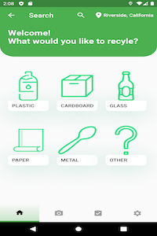
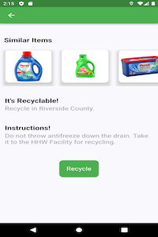

Clean Trash
Android app that helps you recycle according to county guidelines
 The home page gives six recyclable categories (plastic, carboard, glass, metal, paper, and other). It's intended to help narrow down the type of item being recycled. At the top right, the user's location is on display if location access is enabled.
This is necessary to know what county the items are being recycled in. On the top left, there is a search bar where the user can search for a specific item instead of selected one of the six categories. On the footer of the app, there is a home page (the current page), camera icon (to take a picture of item), badge page icon, and settings icon.
The search bar has the most commonly thought to be recyclable. If the search bar is not used and a category is selected instead (or the cmaera icon is pressed), the user's camera will be accessed to take a picture of the item.
After the image is taken, in the backend, the image is sent to a flask API that hosts the ML model. The model is fed the image and it returns one of the classification classes. Once the classification is decided, the appropriate classification page will be displayed.
This page shows similar items, says whether the item is recyclabe or not in the county. If the item is recyclable, it provides instructions on how to recycle the item appropriately. If the recycle button is pressed, it gives the user points, getting them closer towards a badge.
The badges page is designed to gamify the act of recycling. Each time an item is recycled, because the model returns a classification class, points go towards the type of class recycled. Once the user reaches the required amount to earn a badge, they can claim them.
Additionally, there is a login, sign up, and settings page that is not shown here. It allows the user to update their user info, create an account, or log back into the app.